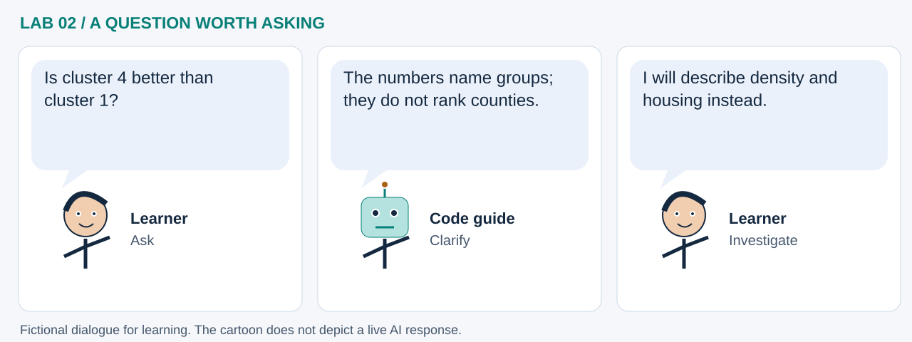

LAB 02 · 32-SECOND VISUAL WALKTHROUGH
From county rows to patterns
Which counties have similar density and housing profiles?
Silent, captioned storyboard. Use the player to pause, seek or change playback speed. On a small screen, use fullscreen or read the transcript below. The diagrams explain the method; they are not recordings of a live model run.
Download MP4 · Captions · Open infographic at full size

What runs here?
Feature engineering, scaling and K-Means run in Pyodide after the Census service returns records.
Browser machine learning: K-Means learns groups from engineered county features.
Transcript and code landmarks
- 00–08s · Measure
Use projected area to turn population counts into comparable densities.
gdf.to_crs(5070) - 08–16s · Scale
Log transforms and standardization reduce domination by feature units and large values.
StandardScaler() - 16–24s · Learn
Group similar feature vectors; cluster numbers are category IDs.
KMeans(n_clusters=5) - 24–32s · Check
Compare maps, scatter and correlations before assigning meaning to groups.
X.corr()
The common misconception

Read the cartoon dialogue
- Is cluster 4 better than cluster 1?
- The numbers name groups; they do not rank counties.
- I will describe density and housing instead.
Try explaining it
Why compare the feature scatter with the geographic map?
Check your reasoning
The scatter shows what the model grouped; the map shows where those records are. Both are needed to interpret the result.
Original educational illustrations and captions authored for this repository. See the notebook for data and software citations.